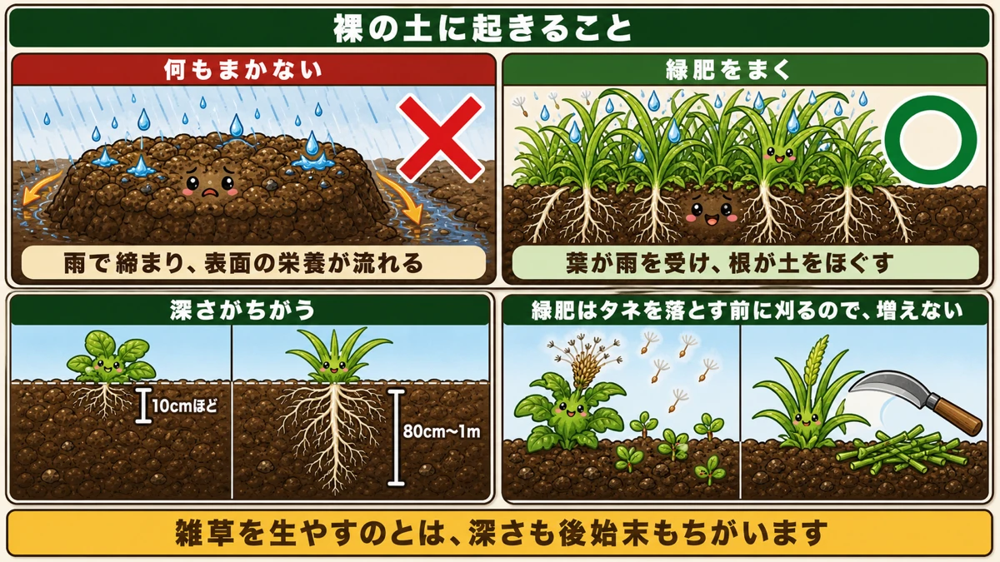
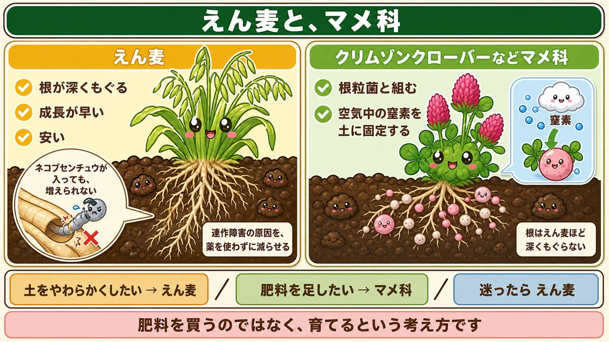
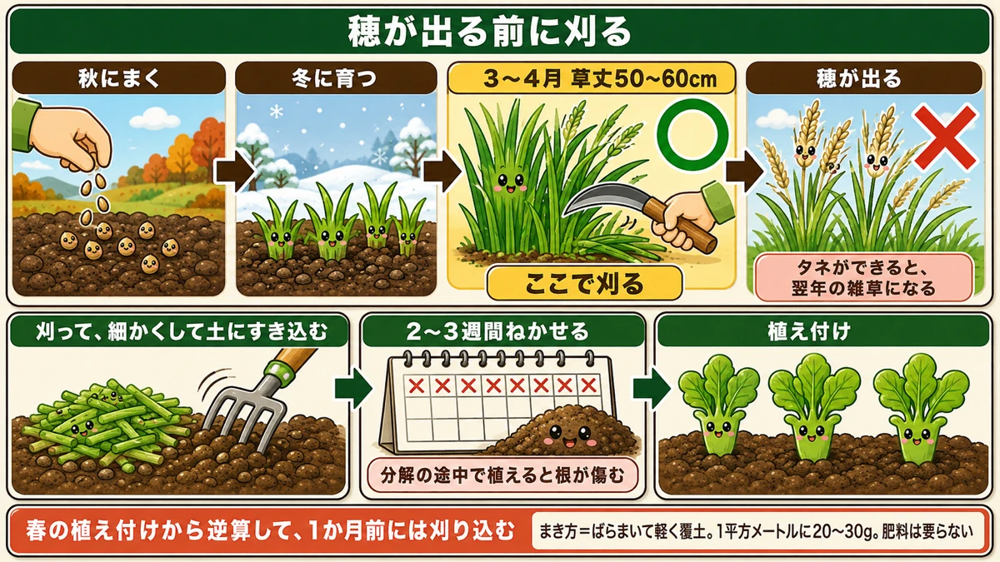

空いたうねに、あえてタネをまきます🌾 根が土を耕す話

🌾「冬のあいだ、うねが空いたままです」
🌾「同じ場所で作り続けたら、だんだん育ちが悪くなった」
🌾「緑肥って、雑草を生やすのと何が違うんですか？」
どうも、8150（えいこう）です🌱 家庭菜園歴8年、理科の教員免許を持っていて、有機・無農薬で野菜を育てています。
今日は、緑肥の話です。
先に、この記事でいちばん言いたいことを言っておきますね。
★緑肥は、肥料を「買う」のではなく「育てる」方法です。
そして、いちばんの働きは肥料ではありません。★根が土を耕してくれることです。
何もまかないと、土は固くなります

裸の土は、雨で締まる
冬のうねを空けたままにすると、何が起きるか。
★雨が直接当たって、土の粒がこわれます。細かくなった土が隙間を埋めて、表面が固く締まります。
さらに★流れる水が、表面の栄養を持っていきます。畑の中でいちばん大事な、上の数センチが痩せていきます。
雑草でもいいのでは、という話
「じゃあ雑草を生やしておけば同じでは」と思いますよね。半分正解です。
でも違いが2つあります。
★1つ目は、深さです。雑草の多くは根が浅く、表面しか耕しません。緑肥は品種によって1mちかく根が入ります。
★2つ目は、タネです。雑草は放っておくとタネを落とし、来年も同じ場所で生えます。緑肥は★タネを落とす前にすき込むので、増えません。
何をまくか

迷ったら、えん麦
家庭菜園でいちばん扱いやすいのが★えん麦です。
- ★成長が早い。まいて2週間ほどで青くなる
- ★根が深くもぐる。固くなった層をこわしてくれる
- ★安い。1kg単位で買っても数百円
そして★これがいちばん大事なところですが、えん麦の一部の品種は、ネコブセンチュウを減らします。
センチュウが減る、という話
センチュウは、根にこぶを作って野菜を弱らせる小さな生きものです。★連作障害の大きな原因のひとつです。
えん麦の根には、★センチュウが入っても、そこで増えられない性質があります。
センチュウは根に入って卵を産みます。★でもえん麦の中では育たない。入ったまま行き止まりになります。
★だからえん麦を1シーズン育てると、畑のセンチュウの数がはっきり減ります。薬を使わずに減らせる、数少ない方法です。
クローバーは、窒素も作る
もうひとつの選択肢が★クリムゾンクローバーなどのマメ科です。
マメ科は根粒菌と組んでいるので、★空気中の窒素を土に固定します。つまり肥料そのものを作ってくれます。
ただし★えん麦ほど根は深くもぐりません。★土をやわらかくしたいならえん麦、肥料を足したいならマメ科、と考えると分かりやすいです。
私はこう使い分けています
- ★夏野菜の跡地（土が固い） … えん麦
- ★何年も使って痩せてきたうね … クローバー
- ★春まで空くだけのうね … えん麦（早いので）
★どちらか迷ったら、えん麦で構いません。失敗が少ないです。
まき方と、すき込む時期

まき方は、ばらまくだけ
畑を軽く耕したら、★タネをばらまいて、レーキで軽く土をかぶせます。それだけです。
★量は1平方メートルに20〜30gくらい。少し多いかなと思うくらいで大丈夫です。
肥料は要りません。★緑肥に肥料をやるのは、本末転倒です。
すき込むのは「穂が出る前」
ここがいちばん大事なところです。
★穂が出て、タネができてしまうと、緑肥が雑草になります。翌年、まいた覚えのないえん麦が畑じゅうに生えます。
★だから、穂が出る前に刈って、土にすき込みます。
もうひとつ理由があります。★若いうちのほうが、やわらかくて分解が早いんです。硬くなってからすき込むと、分解に時間がかかって、そのあいだ窒素が足りなくなります。
具体的な時期
秋にまいたえん麦なら、★3月から4月、草丈が50〜60cmになったころが目安です。
刈って、★2週間から3週間ねかせてから植え付けます。分解の途中で植えると、根が傷みます。
★春の植え付けから逆算して、1か月前には刈り込む。これで間に合います。
学ぶ：根は、どうやって土を耕すのか🔬
理科の時間です。
根が土をやわらかくする、と言われてもピンと来ませんよね。★実際には、2つのことが起きています。
★1つ目は、物理的に押し広げること。根は先端から少しずつ伸びて、土の粒のすきまに割り込んでいきます。細い根が何万本も入るので、土全体に細かい通り道ができます。
★2つ目は、根が枯れたあとです。
役目を終えた根は、土の中で分解されて消えます。★でも、根があった形の穴はそのまま残ります。
この穴が★水と空気の通り道になります。深さ50cmまで根が入っていれば、そこまで空気が届くようになる。★スコップで掘るより、ずっと深くまで耕せます。
お子さんと一緒なら、★透明なペットボトルに土を入れて、えん麦のタネをまいてみてください。★側面から、根が下へ伸びていくのが見えます。2週間もあれば、びっしり網の目になります。
まとめ
ここまで読んでくださって、ありがとうございました。
緑肥は、冬のあいだに畑が勝手に良くなる方法です。
- ★裸のうねは雨で固く締まり、表面の栄養が流れる
- ★雑草との違いは「根の深さ」と「タネを落とさないこと」
- ★迷ったらえん麦。成長が早く、根が深く、安い
- ★えん麦はネコブセンチュウを減らす。入っても増えられないから
- ★窒素を足したいならクリムゾンクローバーなどマメ科
- ★まき方はばらまいて軽く覆土。肥料は要らない
- ★すき込みは穂が出る前。タネを作らせると雑草になる
- ★刈ってから2〜3週間ねかせて植える。分解の途中に植えない
- ★根が枯れたあとの穴が、水と空気の道になる
全部やろうとしなくて大丈夫です。まずは★空いているうねを1本だけ選んで、えん麦をまいてみてください。春に掘ったとき、土のやわらかさで違いが分かります🌾
次回は、収穫した野菜の保存。★根菜・葉物・果菜で、置く場所が全部ちがう話です🥕
えん麦のタネ
根が深くもぐって土をほぐし、ネコブセンチュウを減らします。迷ったらこれです。
![[商品価格に関しましては、リンクが作成された時点と現時点で情報が変更されている場合がございます。]](https://hbb.afl.rakuten.co.jp/hgb/56d21de3.ae31fd42.56d21de4.bc885a0a/?me_id=1381384&item_id=10000017&pc=https%3A%2F%2Fthumbnail.image.rakuten.co.jp%2F%400_mall%2Fyohonsha%2Fcabinet%2F10419213%2Fcompass1768461115.jpg%3F_ex%3D240x240&s=240x240&t=picttext "[商品価格に関しましては、リンクが作成された時点と現時点で情報が変更されている場合がございます。]")

三角ホー
ばらまいたあと、軽く土をかぶせるのに使います。立ったまま作業できます。

備中鍬
春に刈ってすき込むとき。若いうちのほうが分解が早いです。
![[商品価格に関しましては、リンクが作成された時点と現時点で情報が変更されている場合がございます。]](https://hbb.afl.rakuten.co.jp/hgb/56d752c3.3ce6fd3b.56d752c4.f8896826/?me_id=1209220&item_id=10002030&pc=https%3A%2F%2Fthumbnail.image.rakuten.co.jp%2F%400_mall%2Fhonmamon-r%2Fcabinet%2Fimg3%2Fw4580149745643.jpg%3F_ex%3D240x240&s=240x240&t=picttext "[商品価格に関しましては、リンクが作成された時点と現時点で情報が変更されている場合がございます。]")
くん炭（もみ殻）
緑肥と合わせると、通気性の改善が早く出ます。
![[商品価格に関しましては、リンクが作成された時点と現時点で情報が変更されている場合がございます。]](https://hbb.afl.rakuten.co.jp/hgb/56bc30bc.01c5b89d.56bc30bd.ee310357/?me_id=1231595&item_id=10000412&pc=https%3A%2F%2Fthumbnail.image.rakuten.co.jp%2F%400_mall%2Fplanto-iwa%2Fcabinet%2F2707.jpg%3F_ex%3D240x240&s=240x240&t=picttext "[商品価格に関しましては、リンクが作成された時点と現時点で情報が変更されている場合がございます。]")
あわせて読みたい